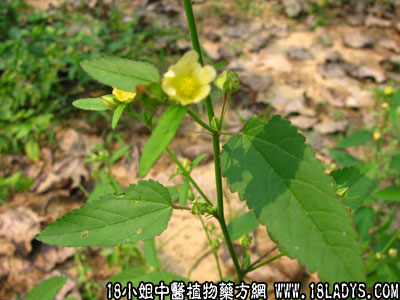

细叶黄花母(中药材植物名:黄花稔)(植物科目:锦葵科)

别名：啜脓羔、白背黄花稔。
植物名：黄花稔。
生长环境：本品为直立、多枝亚灌木。旷地、丘陵地和山坡均有生长。
分布：广布于热带地，广州近郊普遍分布。
入药部分：叶。
采集期：夏、秋。
自采地点：田基、山岗、低湿地。
性味：性凉、味甘淡。
主治、用量和用法：1、脓疮：用鲜叶适量，捣烂外敷患处，成脓自溃，已溃者排脓去毒。脓尽者不用，未成脓者不用；2、小儿疝气：全株干用3至5钱，净瘦肉适量，清水煎服。
本文解释权归中药大全，本文地址：https://www.daquan.com/post/1566.html